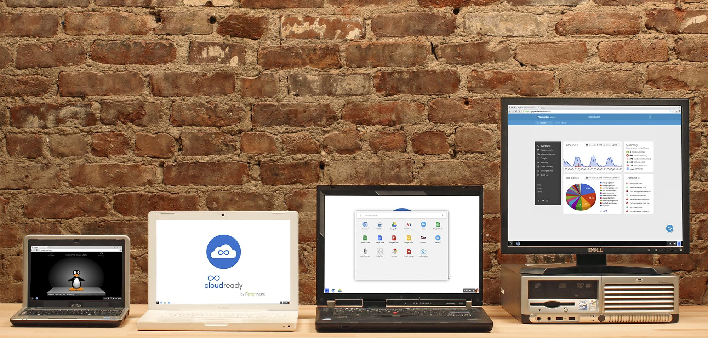

Incubators

91 Springboard
At 91 Springboard, we create an ecosystem for the startup community. We try to enable the start-ups with five basic necessities : Infrastructure, Service providers, Networking, Knowledge and Capital. We do a lot of activities